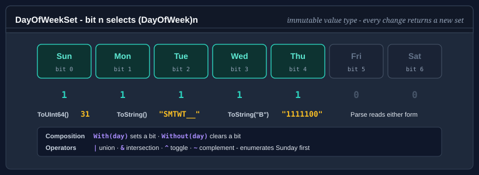

DayOfWeekSet
DayOfWeekSet is an immutable set of days of the week, held in one byte. It is the day-of-week member of the
calendar value sets, and it is the type the working-day APIs in Bodu.Core and
Bodu.Globalization.Calendar take for a working week. It replaces WeekPattern, which Bodu.Core 1.3.0 removed; see
Migrating from WeekPattern.
Every operation that changes the selection returns a new set rather than changing the one it is called on.

Pattern 1 - build a set
Pass the days to the constructor, or start from a set and add or remove days with With and Without:
using Bodu;
DayOfWeekSet weekdays = new DayOfWeekSet(
DayOfWeek.Monday, DayOfWeek.Tuesday, DayOfWeek.Wednesday, DayOfWeek.Thursday, DayOfWeek.Friday);
DayOfWeekSet fourDays = weekdays.Without(DayOfWeek.Friday);
DayOfWeekSet withSaturday = fourDays.With(DayOfWeek.Saturday);
Console.WriteLine(fourDays.Count); // 4
Console.WriteLine(withSaturday.Contains(DayOfWeek.Monday)); // True
Console.WriteLine(withSaturday.Contains(DayOfWeek.Friday)); // False
Contains answers false for a value that is not one of the seven days, such as (DayOfWeek)7, so a membership
test against DateTime.DayOfWeek never throws. The constructor, With and Without throw
ArgumentOutOfRangeException for such a value.
Pattern 2 - use the presets
using Bodu;
DayOfWeekSet workweek = DayOfWeekSet.Weekdays; // Mon-Fri
DayOfWeekSet weekend = DayOfWeekSet.Weekend; // Sat-Sun
DayOfWeekSet every = DayOfWeekSet.All; // all seven days
DayOfWeekSet none = DayOfWeekSet.Empty; // no days
// Regional working weeks, one preset per WorkingDaysOfWeek member.
DayOfWeekSet gulf = DayOfWeekSet.SundayToThursday; // Sun-Thu
DayOfWeekSet sixDay = DayOfWeekSet.MondayToSaturday; // Mon-Sat
MondayToFriday is the same set as Weekdays.
Pattern 3 - combine sets
| is union, & intersection, ^ symmetric difference (the days in exactly one of the sets), and ~ the
complement within the week:
using Bodu;
DayOfWeekSet mondayAndFriday = new DayOfWeekSet(DayOfWeek.Monday) | new DayOfWeekSet(DayOfWeek.Friday);
// Intersect with the working week to drop any weekend days.
DayOfWeekSet working = mondayAndFriday & DayOfWeekSet.Weekdays;
// The days not in the set.
DayOfWeekSet restDays = ~DayOfWeekSet.Weekdays; // Sat-Sun
// The days that differ between two schedules.
DayOfWeekSet oldShift = DayOfWeekSet.Parse("_MTW___");
DayOfWeekSet newShift = DayOfWeekSet.Parse("__TWT__");
DayOfWeekSet changed = oldShift ^ newShift; // Mon and Thu
Two sets are equal (==, Equals) when they select the same days. The sets are not ordered; to test whether one set
contains another, use (a & b) == b.
Pattern 4 - parse and format the mask
The text form is a seven-character mask with one character per day: the day's letter when it is selected and _
when it is not, Sunday first. ToString writes that form, and ToString(format) writes the others:
| Format | Mask | Monday to Friday |
|---|---|---|
S, the default |
Sunday first, _ for a day not selected |
_MTWTF_ |
M |
Monday first, _ for a day not selected |
MTWTF__ |
E, U, D, A |
Sunday first, with a space, _, - or * for a day not selected |
-MTWTF- for D |
S or M with E, U, D or A |
that order with that placeholder | MTWTF-- for MD |
B, 0, 1, 01 |
binary, Sunday first, 1 for a selected day |
0111110 |
Parse reads any of them. A day's letter, in either case, selects the day; _, -, * or a space leaves it out,
one placeholder throughout; and the letters show whether the mask starts on Sunday or on Monday. A mask that begins
with 0 or 1 is read as the binary form. ParseExact reads a mask in a format you name, which is the way to read
Monday-first text whose only letter is a final S: "______S" fits both orders, and Parse reads it Sunday first,
as Saturday. Anything else, an abbreviated list such as "MF" included, is not a mask: Parse throws
FormatException, and TryParse returns false with the empty set.
using Bodu;
DayOfWeekSet mwf = DayOfWeekSet.Parse("_M_W_F_"); // Mon, Wed, Fri
DayOfWeekSet tuth = DayOfWeekSet.Parse("__T_T__"); // Tue, Thu
DayOfWeekSet bin = DayOfWeekSet.Parse("0111110"); // Mon-Fri, binary form
DayOfWeekSet sun = DayOfWeekSet.ParseExact("______S", "M"); // Sunday, Monday first
string mask = DayOfWeekSet.Weekdays.ToString(); // "_MTWTF_"
string monday = DayOfWeekSet.Weekdays.ToString("M"); // "MTWTF__"
string binary = DayOfWeekSet.Weekdays.ToString("B"); // "0111110"
bool ok = DayOfWeekSet.TryParse("MF", out DayOfWeekSet result); // false; result is empty
DayOfWeekSet implements IFormattable, so $"{set:M}" and string.Format("{0:B}", set) apply the format, and
IParsable<DayOfWeekSet>, whose members ignore the format provider: the mask does not depend on culture. An
unsupported format throws FormatException.
Pattern 5 - enumerate the days
foreach over a set yields the selected days in DayOfWeek order, Sunday first, without allocating:
using Bodu;
foreach (DayOfWeek day in DayOfWeekSet.Parse("_MTWTF_"))
Console.WriteLine(day);
// Monday, Tuesday, Wednesday, Thursday, Friday
Pattern 6 - read and write the bits
ToUInt64 returns the set's bits and FromUInt64 builds a set from them. Bit n selects (DayOfWeek)n, so Sunday
is bit 0 and Saturday bit 6; FromUInt64 throws ArgumentOutOfRangeException for a bit above bit 6.
using Bodu;
ulong gulfBits = DayOfWeekSet.SundayToThursday.ToUInt64(); // 31: bits 0 to 4
DayOfWeekSet same = DayOfWeekSet.FromUInt64(gulfBits); // Sun-Thu again
The binary text form is written Sunday first, so it reads the bits from bit 0 up: Sunday to Thursday is "1111100",
the reverse of how 31 is usually written in binary.
Pattern 7 - find matching dates
using Bodu;
// Every Tuesday and Thursday in April 2025.
DayOfWeekSet tuesdayAndThursday = new DayOfWeekSet(DayOfWeek.Tuesday, DayOfWeek.Thursday);
for (DateOnly day = new DateOnly(2025, 4, 1); day <= new DateOnly(2025, 4, 30); day = day.AddDays(1))
{
if (tuesdayAndThursday.Contains(day.DayOfWeek))
Console.WriteLine(day);
}
Pattern 8 - bridge to and from WorkingDaysOfWeek
WorkingDaysOfWeek names the common working weeks (MondayToFriday, SaturdayToThursday, ...). Convert
between the two with the extension methods on WorkingDaysOfWeekExtensions, for an API that
takes one when you have the other:
using Bodu;
using Bodu.Extensions;
DayOfWeekSet saudiWeek = WorkingDaysOfWeek.SaturdayToWednesday.ToDayOfWeekSet();
WorkingDaysOfWeek back = DayOfWeekSet.Weekdays.ToWorkingDaysOfWeek(); // MondayToFriday
Migrating from WeekPattern
DayOfWeekSet keeps WeekPattern's text forms and presets, so text that a WeekPattern wrote, including the
workingDays attributes of calendar documents, reads unchanged. The rest of the surface moved to the shape of the
other calendar value sets:
WeekPattern |
DayOfWeekSet |
|---|---|
WeekPattern.AllDays |
DayOfWeekSet.All |
Empty, Weekdays, Weekend and the other presets, static fields |
the same names, static properties |
new WeekPattern(string) |
DayOfWeekSet.Parse(string) |
pattern[day] (indexer) |
set.Contains(day) |
Contains(day) throws for a value that is not a day |
Contains(day) returns false for it |
FromByte(byte) / ToByte() / ToInt32(), Sunday at bit 6 |
FromUInt64(ulong) / ToUInt64(), Sunday at bit 0 |
implicit conversion to byte, IEquatable<byte> |
removed: use ToUInt64() |
<, <=, >, >=, IComparable |
removed: the order meant nothing as a set relation |
[Serializable] / ISerializable |
removed: store the text form |
ToString(IFormatProvider) |
ToString() |
unsupported format in ToString throws ArgumentException |
throws FormatException; an empty format means the default |
ToWeekPattern() on WorkingDaysOfWeek and IWeekendDefinitionProvider |
ToDayOfWeekSet() |
To move a stored WeekPattern.ToByte value over, reverse its seven bits, or rebuild the set from the days whose bit
6 - (int)day is set.
API summary
| Member | Description |
|---|---|
Empty, All |
The set of no day and the set of all seven. |
Weekdays, Weekend |
Monday to Friday, and Saturday and Sunday. |
MondayToFriday, MondayToSaturday, MondayToThursdayAndSaturday, SaturdayToThursday, SaturdayToWednesday, SundayToFriday, SundayToThursday |
The regional working weeks, one per WorkingDaysOfWeek member. |
DayOfWeekSet(params DayOfWeek[]) |
The set of the days given. |
Count |
The number of days selected, 0 to 7. |
Contains(DayOfWeek) |
Whether the day is selected; false for a value that is not a day. |
With(DayOfWeek), Without(DayOfWeek) |
A set with the day added or removed. |
FromUInt64(ulong), ToUInt64() |
The set's bits, bit n for (DayOfWeek)n. |
Parse, TryParse, ParseExact, TryParseExact |
Read a seven-character mask. |
ToString(), ToString(string), ToString(string, IFormatProvider) |
Write a seven-character mask. |
\|, &, ^, ~, ==, != |
Union, intersection, symmetric difference, complement and equality. |
GetEnumerator() |
The selected days in DayOfWeek order, Sunday first, without allocating. |
Where to go next
- Calendar value sets - the sets of months, days of the month, hours, minutes and seconds.
- Fiscal quarters, working weeks, and weekend providers -
WorkingDaysOfWeekand the weekend providers. - Working-day arithmetic - working weeks in the calendar engine.
- Core Foundations guides - every guide in this topic.